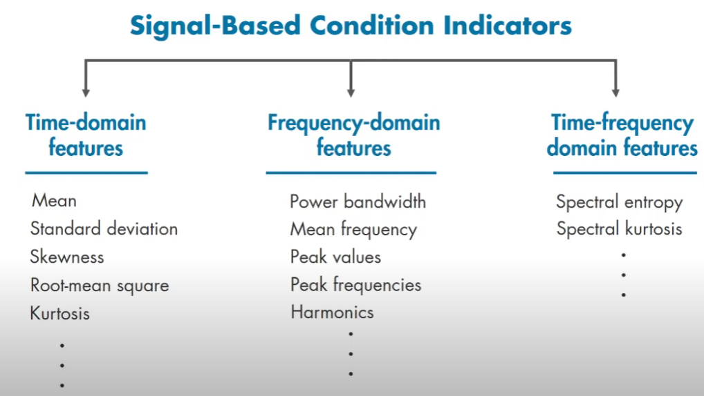

Feature Extraction
preprocess data: remove noise and outliers. e.g. time signal to freq domain (say peak freq. - Condition Indicators)
Frequency domain analysis is important for periodic data e.g. in rotating machines (obvious reasons)
Feature Extraction for Identifying CIs
